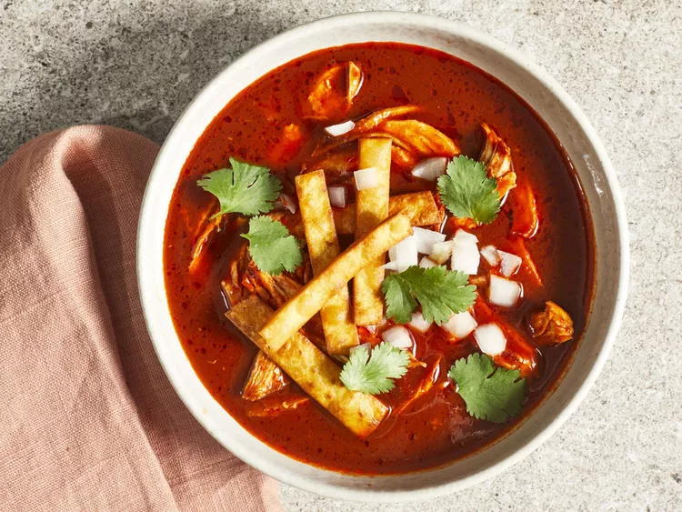

This birria de pollo is deeply flavorful, rich, hearty, a little smoky and just plain delicious. Birria is a Mexican stew that originated in Jalisco. It is traditionally made with goat, lamb, or beef.
- 4 cups chicken broth
- 4 dried guajillo chiles, stemmed and seeded
- 4 dried ancho chiles, stemmed and seeded
- 1 dried de árbol chile, stemmed and seeded (Optional)
- 3 tablespoons canola oil, divided
- 1 medium white onion, quartered, divided
- 4 cloves garlic
- 1 (14.5 ounce) can fire-roasted diced tomatoes
- 2 tablespoons apple cider vinegar
- 2 teaspoons kosher salt, divided
- 2 teaspoons ground cumin
- 1 teaspoon dried oregano
- ½ teaspoon ground black pepper
- ¼ teaspoon ground cloves
- 1 ½ pounds skinless, boneless chicken breasts
- 1 bay leaf
- ¼ cup crispy tortilla strips (Optional)
- 2 tablespoons chopped fresh cilantro, or to taste
- 6 lime wedges, for serving
- Gather all ingredients.
- Add chicken broth to a medium saucepan and bring to a boil over medium-high. Remove from heat and add dried chiles. Cover and let sit until chiles have softened, about 10 minutes.
- Meanwhile, heat 2 tablespoons of the oil in a large pot or Dutch oven over medium-high. Add 3 of the onion quarters, reserving the last quarter for later use, and garlic to pan. Cook, flipping once, until charred, about 6 minutes.
- Pour through a fine mesh strainer into a large bowl.
- Season chicken with remaining 1 teaspoon salt. Add remaining 1 tablespoon oil in to the large pot; heat over medium-high. Add chicken; cook, flipping once, until golden brown, about 3 minutes per side.
- Pour blended chile mixture over meat chicken and top with bay leaf. Cover and cook over medium-low until chicken is cooked through, about 25 minutes.
- Meanwhile, chop remaining onion quarter. Set aside.
- Uncover pot, discard bay leaf, and remove chicken from chile mixture and shred. Divide shredded chicken evenly among 6 bowls, and ladle in the soup over chicken in bowls. Top with reserved chopped onion, tortilla strips, if desired, cilantro and serve with lime wedges.